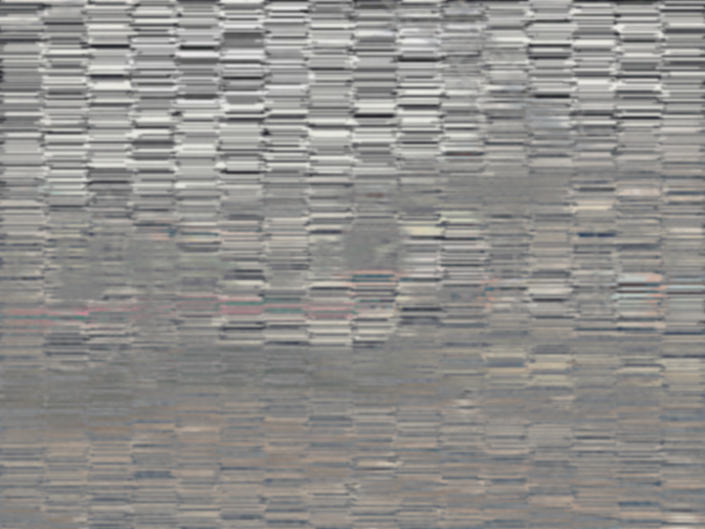
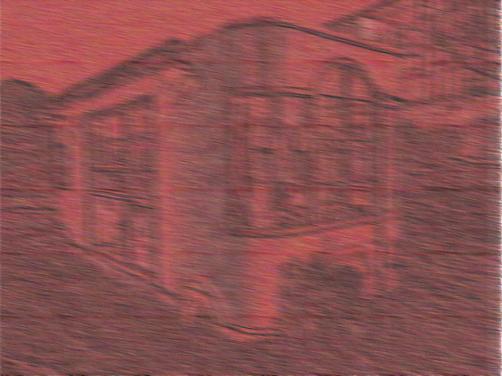

これが解けたらもはや透視能力者以上のクイズ Vol.1
問題１
これは何？乗り物１両です。
Sky
Yellow
Hover
問題２
ここに車輌が2つ映っています。何と何でしょう。

問題３
これはどこでしょう。

問題４
これはなんでしょう。
ここには何もありません。
というわけで、今日はクイズです。結構簡単になってしまったかも知れない...
3問しかないのはいわゆるごあいきょーってやつです。
答えは来週の記事に載せておきます。
さて、今回のクイズは1問目が特に私を知っている人には結構簡単です。
最難関（と想定している）は4問目です。まあ、cicada3317...じゃなくてcicada3301の解答に参加したことある人なら結構簡単だと思います。
そんな有能な人はこのホームページ見てないだろうけど...w
というわけでぜひ解いてみてはいかがでしょうか。
ここまでのご読了ありがとうございます。Youtubeチャンネルの登録も宜しくお願いします。
Tweet
記事一覧に戻る
Consoles